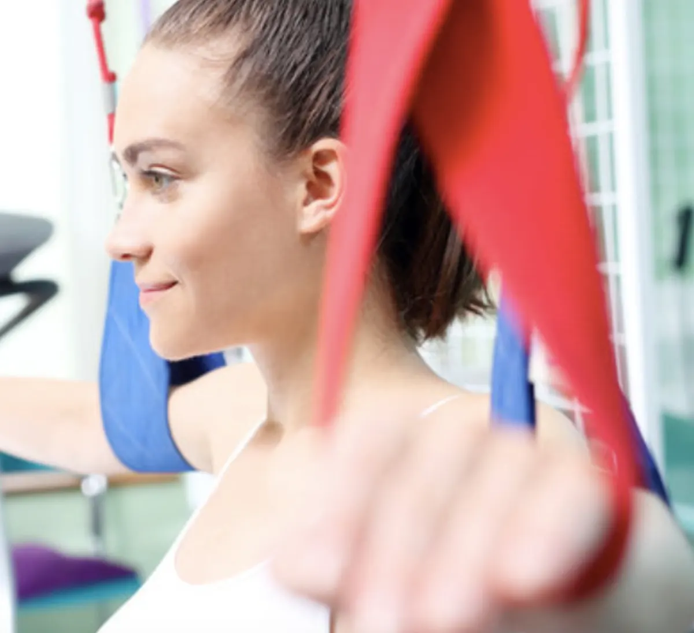

Szczecinek
ul. Kościuszki 57, 78-400 Szczecinek
94 372 14 51 szczecinek@rehamedica.info.plSzczecinek
ul. Kościuszki 57, 78-400 Szczecinek
94 372 14 51 szczecinek@rehamedica.info.plNa czym polega
Rehabilitacja ortopedyczna to kompleksowa opieka specjalistyczna podejmowana po urazach narządu ruchu, kontuzjach, przeciążeniach, przed planowanym zabiegiem operacyjnym lub po nim w celu trwałego i skutecznego przywrócenia sprawności oraz wydajności sprzed zdarzenia w możliwie najkrótszym czasie.

Rehabilitacja pourazowa podejmowana niezwłocznie po uszkodzeniu daje bardzo wysokie szanse na osiągnięcie utraconej sprawności fizycznej. Każdy uraz czy obrażenie powstałe w wyniku działania czynników zewnętrznych powoduje określone skutki w naszym organizmie. Mogą one przybierać postać bólu, obrzęku, podrażnienia lub objawiać się upośledzeniem funkcji ruchowych czy propriocepcji. Istotą podejmowanej rehabilitacji jest likwidowanie lub łagodzenie dolegliwości bólowych, odbudowa siły i masy mięśniowej, redukcja powstałych zmian tkankowych w obrębie mięśni, więzadeł, ścięgien oraz przywrócenie zakresów ruchomości w stawach.
W ramach rehabilitacji ortopedycznej realizowana jest rehabilitacja przed- i pooperacyjna.
Rehabilitacja przedoperacyjna
Proces mający na celu przygotowanie pacjenta do planowanej operacji w celu zapewniania maksymalnie pozytywnego rezultatu podejmowanego zabiegu. Ponadto niejednokrotnie zdarza się, że warunkiem przystąpienia do określonej operacji jest uprzednie odbycie terapii rehabilitacyjnej w celu przywrócenia pełnego zakresu ruchu, przywrócenia siły mięśniowej, edukacji dotyczącej postępowania bezpośrednio po zabiegu (np. nauka poruszania się o kulach, profilaktyka przeciwzakrzepowa, ćwiczeń, itd.).
Rehabilitacja pooperacyjna
Kompleksowa terapia, która powinna być podjęta jak najszybciej po wykonanym zabiegu. Działania rehabilitacyjne wpływają na przyspieszenie procesów gojenia oraz łagodzą dolegliwości bólowe i obrzęki. Ponadto rehabilitacja jest fundamentalnym elementem profilaktyki przeciwzakrzepowej. Odpowiednio wcześnie wdrożona terapia wpływa na modelowanie tkanek miękkich, powięzi czy samej blizny, co zapobiega powstaniu powikłań pooperacyjnych od zrostów przez utrudnione gojenie po np. odrzucanie przeszczepu. Rehabilitacja pozabiegowa to także stopniowy proces uruchamiania i przywracania utraconych funkcji, siły mięśniowej oraz zakresu ruchomości w stawach. Po zabiegach wszczepienie endoprotezy odgrywa kluczową rolę w postępowaniu usprawniającym oraz poprawia krążenie zapobiegając tym samym pojawianiu się zakrzepicy.
Metody rehabilitacji ortopedycznej dobierane są w oparciu o szereg czynników, do których należy m.in. wiek pacjenta, jego stan zdrowia i ogólna kondycja, rodzaj uszkodzenia bądź dysfunkcji lub też charakter zabiegu operacyjnego.
W realizacji procesu rehabilitacji wykorzystuje się szereg specjalistycznych metod i technik. Głównie są to: zabiegi fizykoterapeutyczne, kinezyterapeutyczne, metody hydro-balneologiczne, uzdrowiskowe oraz metody specjalne stworzone w celu leczenia niektórych chorób, z wykorzystaniem indywidualnych technik opracowanych autorsko przez fizjoterapeutów i lekarzy (metody Cyriaxa, McKenzi’ego, PNF, DBC i inne). Uzupełnieniem powyższych działań leczniczych jest psychoterapia i terapia zajęciowa.
Podstawą rehabilitacji ortopedycznej jest kinezyterapia (miejscowa i ogólna), która polega na wykorzystaniu ruchu jako środka leczniczego. Celem kinezyterapii jest odbudowa, utrzymanie i rozwój ogólnej sprawności fizycznej, poprawienie funkcji narządu ruchu, a także poprawienie sprawności psychicznej człowieka.
Wsparciem kinezyterapii jest fizykoterapia. Wpływ bodźców fizykalnych na narząd ruchu ma działanie przeciwbólowe, przeciwzapalne i przeciwobrzękowe. Fizykoterapia wpływa na przyspieszenie procesów gojenia się tkanek. W fizykoterapii, w leczeniu schorzeń narządu ruchu wykorzystuje się głównie elektroterapię (wpływa na zmniejszenie dolegliwości bólowych oraz działanie przeciwzapalne), magnetoterapię (przyspiesza procesu naprawy tkanki mięśniowej i kostnej, działa przeciwzapalni, zmniejsza obrzęk tkanek i dolegliwości bólowe w narządzie ruchu), światłolecznictwo, hydroterapię.
Krioterapia miejscowa, elektroterapia (wpływa na zmniejszenie dolegliwości bólowych oraz działanie przeciwzapalne), laseroterapia (przyspiesza proces regeneracji tkanek), masaż, ćwiczenia izometryczne są z kolei stosowane bezpośrednio po urazie, celem zniwelowania obrzęku, krwiaka i zmniejszenia dolegliwości bólowych. Zastosowanie we wczesnym okresie zabiegów fizykalnych prowadzi do skrócenia okresu leczenia podstawowego zmian pourazowych.
Innym zabiegiem fizykalnym wykorzystywanym w rehabilitacji ortopedycznej jest fala ultradźwiękowa, która wpływa na pobudzenie i regenerację nerwu, zwiększa elastyczność tkanki łącznej poprzez wpływ na włókna kolagenowe, a także działa przeciwbólowo.
W leczeniu objawów zaników mięśniowych stosuje się zabiegi z zakresu elektrostymulacji.
W procesie rehabilitacji ortopedycznej niezwykle ważne może być wykorzystywanie zaopatrzenia rehabilitacyjnego. Zaopatrzenie rehabilitacyjne obejmuje sprzęt ortopedyczny, a więc ortozy, protezy, a także sprzęt pomocniczy.
Wybierz placówkę